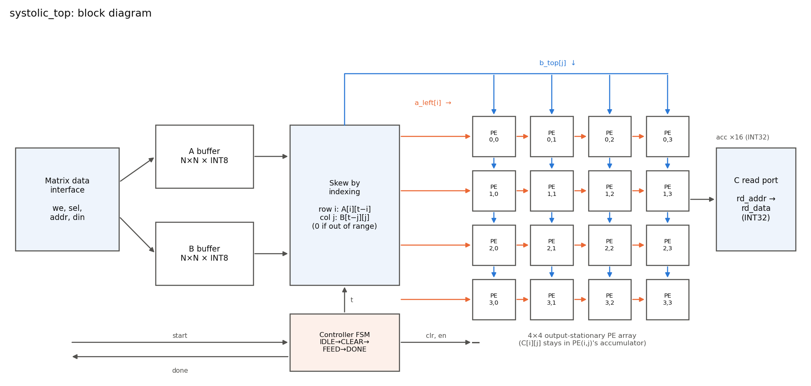
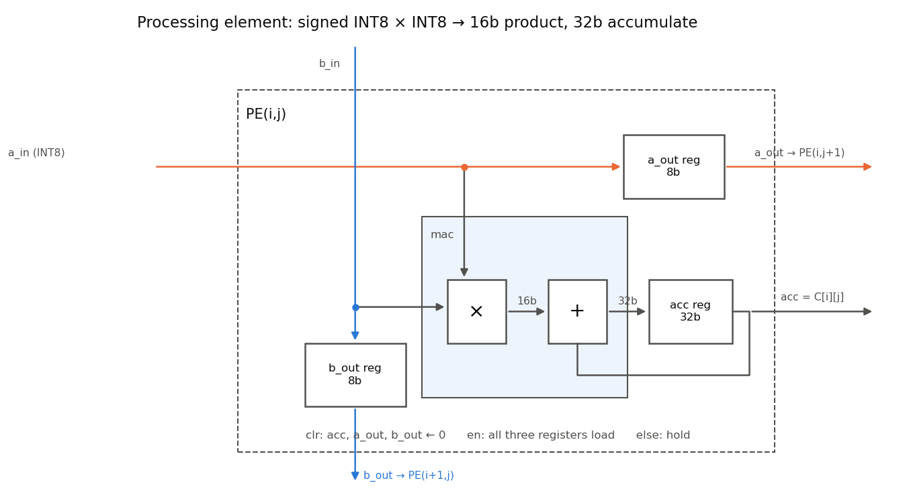
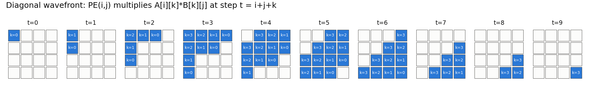
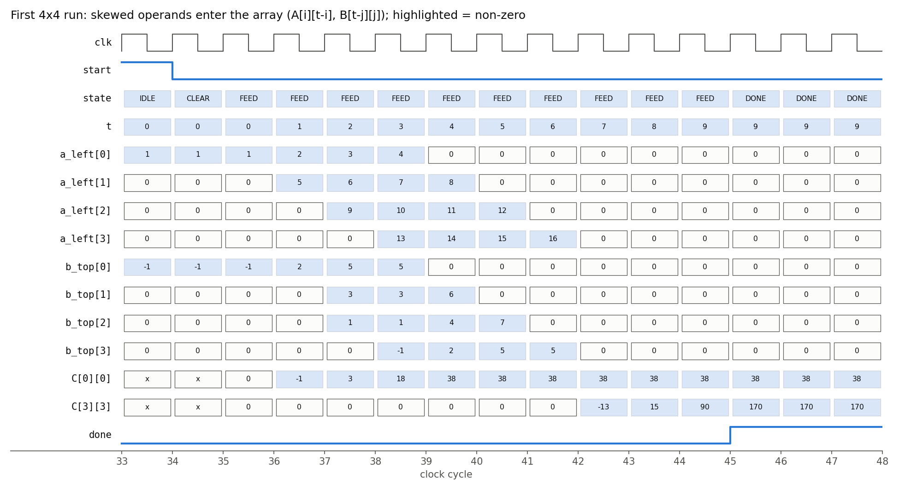
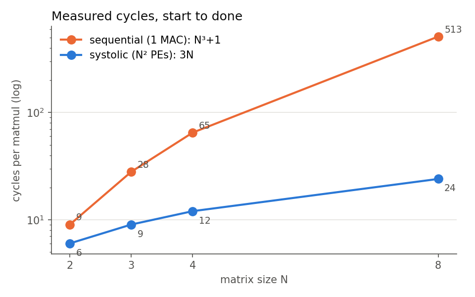
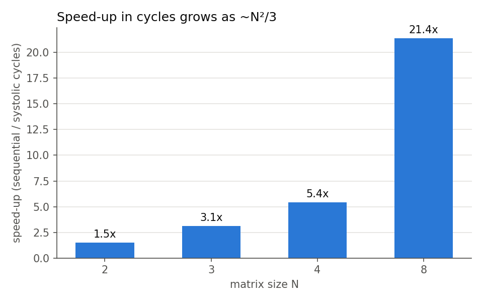

A parameterised 4×4 output-stationary systolic array in synthesizable Verilog: 12 cycles per INT8 matrix product, against 65 for a sequential MAC.
TEAM ASCII · MODERN COMPUTER ARCHITECTURE · NOVEMBER 2026
Abhijeet2401010013
Prashant Pandey2401010339
Shubham Jain2401010452
Divyanshi Khanka2401010159
Rahul Kumar2401020100
◆
Executive summary
Our 4×4 systolic array multiplies two 4×4 INT8 matrices in 12 clock cycles. A single-MAC sequential design needs 65. That is 5.4× fewer cycles, and an estimated 6.2× less wall-clock time at the post-place-and-route clock rates targeting an iCE40.
12
cycles per 4×4 product, start to done (3N)
5.4×
fewer cycles than the sequential baseline (65)
52.3 MHz
estimated Fmax after place and route (nextpnr, iCE40 HX8K)
26/26
matrix test cases pass on both designs
The design follows the output-stationary dataflow used in AI accelerators such as Google’s TPU. Each processing element (PE) keeps one element of C, while A flows right and B flows down through the grid one PE per clock. It is parameterised (N×N), lint-clean under Verilator -Wall, and verified against an independent reference model at N = 2, 3, 4 and 8.
Scope. The entire project is software. The design is described in Verilog, simulated with iverilog and Verilator, and evaluated with open-source synthesis and place-and-route tools (Yosys, nextpnr) for area and timing estimates. No physical chip or FPGA board was built, programmed or used — all results in this report come from simulation and tool reports.
Contents
1Objective and specification
2System architecture
3Processing element and MAC unit
4Dataflow and skew timing
5Controller FSM
6Verification
7Performance analysis
8Synthesis: resources and Fmax
9Limitations, conclusion and team
1
Objective and specification
Design a small systolic-array accelerator for matrix multiplication from interconnected processing elements, verify it, and compare it with sequential multiplication.
Parameter
Value
Array
4×4 PEs (parameter N)
Operands
Signed INT8
Accumulators
Signed 32-bit
Dataflow
Output-stationary: A right, B down, C stays in each PE
The host writes A and B into input buffers, the controller steps t, and the skew logic feeds one diagonal of each matrix into the PE grid per cycle. After 3N cycles, C is read straight out of the PE accumulators.

Figure 1.systolic_top: matrix data interface, A and B buffers, skew logic, 4×4 PE array, controller FSM and C read port. Orange arrows carry A, blue arrows carry B.
Matrix data interface
Both designs share one interface, so a single testbench drives them with identical data.
Operation
Signals
Write
we = 1, sel = 0 for A or 1 for B, addr = row×N + col, din = INT8 element
Run
pulse start, wait for done
Read
rd_addr = row×N + col returns C[row][col] as INT32 on rd_data
3
Processing element and MAC unit
Each PE is one MAC unit plus three registers, and does one multiply-accumulate per enabled cycle.

Figure 2. PE(i,j): a_in passes right through a_out, b_in passes down through b_out, and the mac block updates the 32-bit accumulator.
MAC unit (mac)
Combinational sum = acc + a × b. The 8×8 signed product is 16 bits, sign-extended to 32 bits before the add.
Registers (pe)
On en: a_out ← a_in, b_out ← b_in, acc ← sum. On clr: all three are zeroed. The acc of PE(i,j) is C[i][j].
// rtl/pe.v wire signed [15:0] prod = a * b; assign sum = acc + {{16{prod[15]}}, prod};
No overflow
The largest product is (−128)×(−128) = 16 384, so 32 bits are safe for N ≤ 131 071.
4
Dataflow and skew timing
A[i][k] and B[k][j] meet in PE(i,j) at step t = i + j + k, so the last product lands at t = 3N − 3 and the FEED phase lasts 3N − 2 cycles.
left input of row i = A[i][t − i] // 0 if out of range top input of col j = B[t − j][j] meeting step t = i + j + k // last at t = 3N − 3 = 9
The controller counts the systolic step t. The skew comes from indexing the input buffers with t, so the usual triangle of delay registers is not needed.

Figure 3. Active PEs at each step t = 0…9. The label is the k each PE is multiplying; the wavefront sweeps diagonally from PE(0,0) to PE(3,3).
Left-edge inputs for N = 4
t
Row 0
Row 1
Row 2
Row 3
0
A00
·
·
·
1
A01
A10
·
·
2
A02
A11
A20
·
3
A03
A12
A21
A30
4
·
A13
A22
A31
5
·
·
A23
A32
6
·
·
·
A33
5
Controller FSM
A four-state Moore machine sequences each run. One cycle leaves IDLE, one clears, and FEED lasts 3N − 2 cycles: exactly 3N cycles from start to done.
IDLEafter reset; waits for start
→
CLEAR1 cycle; clr = 1 zeroes acc and a/b
→
FEED3N − 2 cycles; en = 1, t = 0…3N−3
→
DONEdone = 1; C readable; start → CLEAR
State
Outputs
Next state
IDLE
none
start → CLEAR
CLEAR
clr = 1: zero every accumulator and a/b register
FEED with t = 0
FEED
en = 1: every PE does one MAC and passes a/b on
t == 3N−3 → DONE, else t + 1
DONE
done = 1: results stay in the accumulators
start → CLEAR
The sequential baseline uses the same idle/run/done pattern with i, j and k counters, and takes N³ + 1 cycles.
6
Verification
Every test passes: the MAC on all 65 536 INT8 pairs, and 26 matrix cases on both designs at N = 2, 3, 4 and 8, each checked against an independent reference model.
Check
What it covers
Result
make lint
Verilator -Wall on all RTL
clean
make sim-pe
every INT8 × INT8 product; 16 directed PE checks; 200 random accumulate steps
ALL TESTS PASSED
make sim
26 cases on both designs: counting, identity, zero, all +127, all −128, mixed signs, 20 random; latency must be 3N and N³+1
26 / 26
make sweep
the same 26 cases at N = 2, 3, 4, 8
all pass
numpy cross-check
reads A, B and C from the VCD and asserts A @ B == C
OK
Independent review
separate testbench vs numpy at N = 2, 3, 4, 5, 8 (36 cases each)
0 failures
Mutation testing: the tests can fail
We broke the RTL on purpose. A skew off by one step fails 25 of 26 cases (only all-zero cannot notice). Ending FEED one cycle early fails all 26. An unsigned or zero-extended product fails 23 of 26. make sim exits with an error whenever any check fails.

Figure 4. First 4×4 run from the VCD dump. The skewed inputs enter as a staircase; C[0][0] is final after 4 MACs, C[3][3] = 170 after its last MAC at t = 9; done rises 12 cycles after start.
7
Performance analysis
At N = 4 the array finishes in 12 cycles against 65. The gap widens with size, to 21.4× at N = 8, because the array does N² MACs per cycle while the baseline does one.

Figure 5. Measured cycles, start to done (log scale).

Figure 6. Cycle speed-up of the systolic array over the baseline.
These are compute cycles. Writing A and B takes 2N² = 32 cycles on both designs, so end to end N = 4 is 44 vs 97 cycles (2.2×). Overlapping the next load with the current run would hide that cost.
8
Synthesis: resources and Fmax
In the open-source tool flow (Yosys synthesis, nextpnr place-and-route targeting an iCE40 HX8K), the systolic array closes timing at an estimated 52.3 MHz and would do one 4×4 product in 229 ns against 1424 ns for the baseline: an estimated 6.2× faster for 2.5× the logic cells.
229 ns
per 4×4 product, systolic (12 cycles at 52.3 MHz)
1424 ns
per 4×4 product, sequential (65 cycles at 45.6 MHz)
6.2×
estimated wall-clock speed-up
0.84
GMAC/s peak (16 MACs/cycle at 52.3 MHz)
Design (N = 4)
Xilinx LUT
Xilinx FF
DSP48E1
iCE40 LCs
iCE40 Fmax
systolic_top
592
328
16
4365 / 7680 (56 %)
52.3 MHz
seq_matmul
1155
776
1
1735 / 7680 (22 %)
45.6 MHz
Xilinx columns are a Yosys synth_xilinx estimate for 7-series. Each accumulator packs into a DSP48 P register and most a/b pipeline registers into the DSP A/B registers, so the systolic design uses fewer LUTs and FFs than the baseline, which keeps its 16 × 32-bit result buffer in fabric.
iCE40 columns come from nextpnr-ice40 (--hx8k --package ct256, 50 MHz target). The HX8K has no DSP blocks, so all 16 multipliers are built from logic cells.
Vivado:syn/vivado.tcl is a ready-to-run batch flow for an Artix-7 (xc7a35t, Basys3) at a 100 MHz constraint, provided for the lab PCs. It has not been run here; the numbers in this section are Yosys/nextpnr tool estimates, not measurements from physical hardware.
9
Limitations, conclusion and team
Limitations and future work
Limitation
Effect and fix
Loading is not overlapped
2N² write cycles before each run (2.2× end to end at N = 4). Double-buffer A and B so the next load runs during FEED.
One run at a time
Back-to-back pipelined runs would raise average throughput toward the 16 MACs/cycle peak.
Register buffers
Fine at 4×4; move to block RAM for N ≥ 16.
Host protocol
Writes during a run are not blocked and start is ignored while busy; the host waits for done. N ≥ 2.
Conclusion
The 4×4 output-stationary systolic array meets every item of the brief and multiplies 4×4 INT8 matrices 5.4× faster in cycles than a sequential MAC, with a gap that grows as N²/3. The cost is area: 16 multipliers instead of one. That trade — spending logic area on parallel MACs — is the one modern AI accelerators make. Every result here comes from software: RTL simulation for correctness, and open-source synthesis/place-and-route tools for the area and timing estimates; no physical hardware was built.
Team contributions
AB
Abhijeet2401010013
Systolic core: N×N array, controller FSM, top level (input buffers, skew, data interface) and integration. systolic_array.vcontroller.vsystolic_top.v